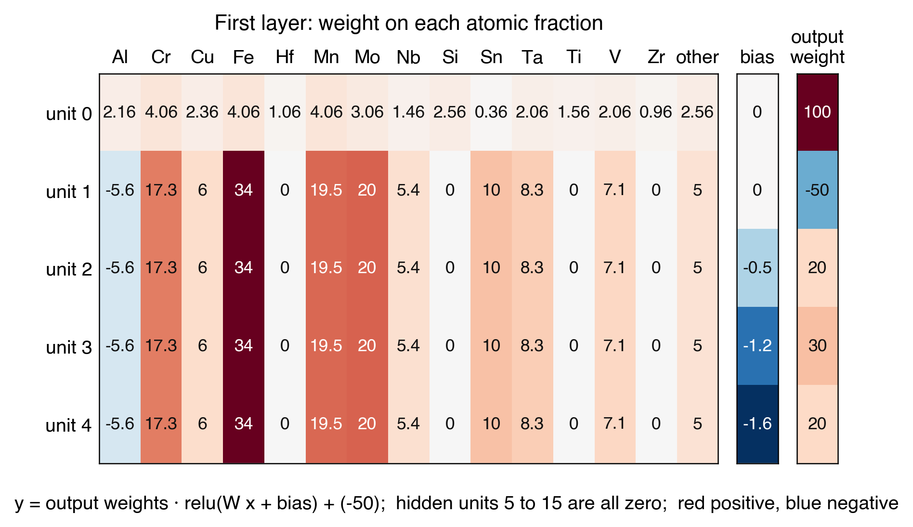
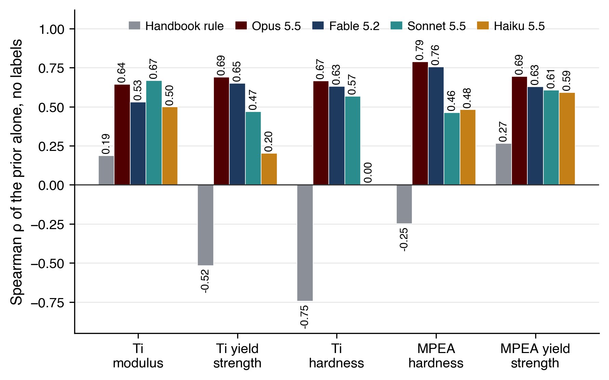
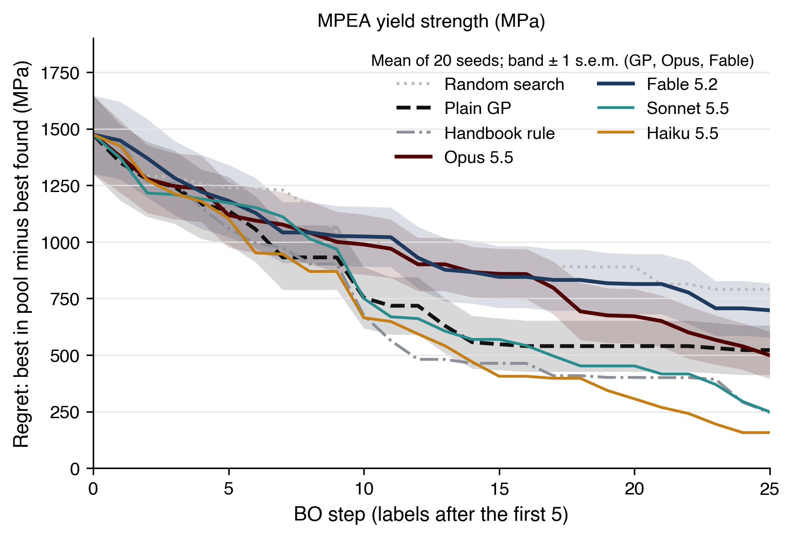
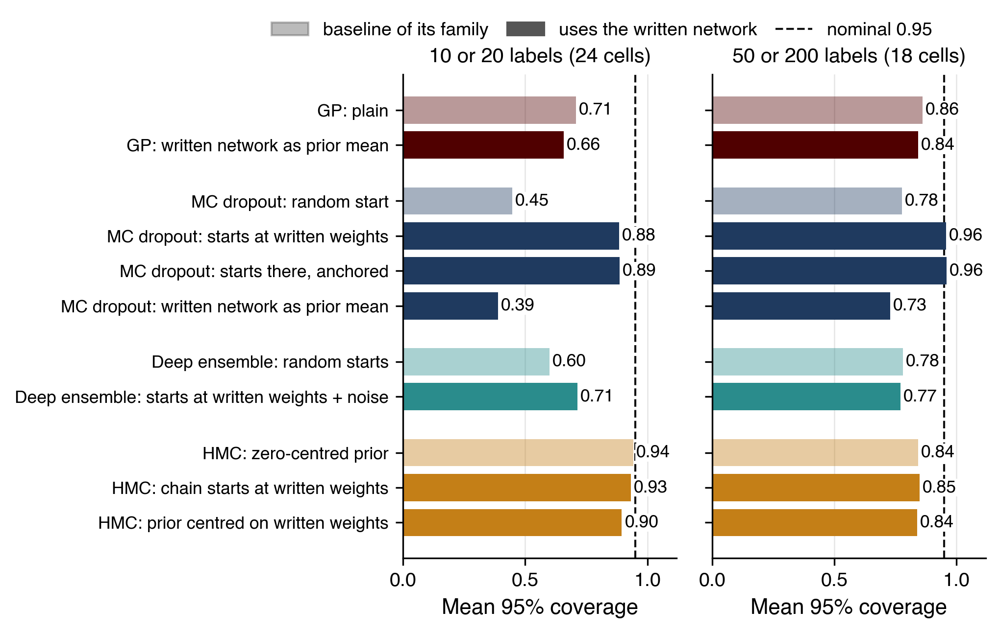

MATERIALS SCIENCE & ENGINEERING
TEXAS A&M UNIVERSITY
Department of Materials Science and Engineering
49
Done


60 networks written with no data
4 models, 5 alloy tasks
used as GP mean a·m(x) + b
Found


Opus 5.5: better BO on 4 of 5 tasks
worse on MPEA yield strength
handbook rule: no gain
Next


diagnose MPEA yield strength
propagate slope uncertainty
second pool; a real closed loop